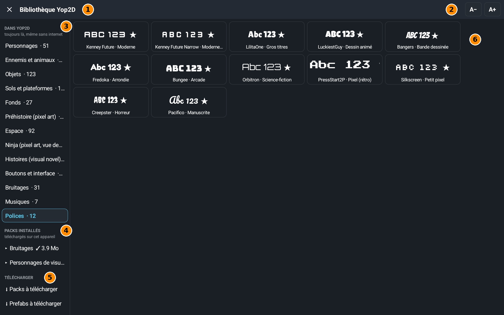

Die Bibliothek ist der große Vorrat an fertigen Bildern, Tönen, Musik, Schriften und Titeln. Du öffnest sie mit der Schaltfläche Yop2D-Bibliothek im Fenster Assets oder wenn du im Editor ein Bild, einen Ton, eine Schrift oder einen Titel auswählst.
Das Fenster auf einen Blick

- 1Die Bibliothek schließen und dorthin zurückkehren, wo du warst.
- 2A− und A+: ändern die Vorschaugröße. Praktisch bei Schriften und Titeln, die man groß besser beurteilt.
- 3In Yop2D (immer da, auch ohne Internet): die Themen, die schon in Yop2D stecken (Figuren, Gegner, Objekte, Hintergründe, Geräusche, Musik, Schriften…). Die Zahl daneben ist die Anzahl der Elemente. Tippe ein Thema an, um den Inhalt zu sehen. Je nachdem, von wo du die Bibliothek öffnest, siehst du auch Mein Projekt (die Dateien, die schon in deinem Projekt sind) mit der Schaltfläche Vom Tablet importieren.
- 4Installierte Packs: die Packs, die du auf diesem Gerät heruntergeladen hast, mit ihrer Größe. Tippe den Pfeil an, um ihre Ordner zu sehen. Ein Pack wird auf seiner Seite gelöscht (Schaltfläche Löschen); was du schon für deine Projekte genommen hast, bleibt in den Projekten.
- 5Herunterladen: Pakete zum Herunterladen (große Serien von Bildern, Tönen und Schriften) und Prefabs zum Herunterladen (fertige Objekte). Du brauchst Internet.
- 6Die Karten: Tippe eine Karte an, um sie zu nehmen. Nur die gewählte Datei wird in dein Projekt kopiert. Ein animiertes Bild (blauer Rahmen, ▶) fragt, ob du es mit seinen Animationen oder als Nur ein Bild willst. Bei einer Schrift zeigt die Karte einen Beispieltext in dieser Schrift.